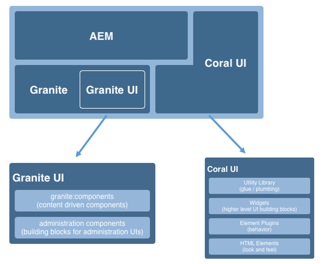
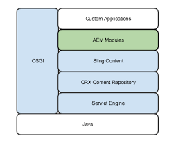

Chapter 2 : AEM architecture
A quick overview about Adobe Experience Manager.
-
Java Runtime Environment (JRE) Requirement
AEM operates as a Java-based web application, necessitating the presence of a server-side Java Runtime Environment (JRE) for proper functioning. -
Granite Platform 
Granite Platform, Adobe's open web stack, serves as the technical foundation for AEM.
It also provides the fundamental UI framework with the following key objectives:- Offering granular UI widgets.
- Implementing best UI practices.
- Providing an extensible UI.
-
OSGi Framework 
The OSGi framework is comprised of specifications that define a component and the model for Java.
One of OSGi's key advantages is its ability to allow each product segment to define its API with a set of exported Java bundles, specifying its required dependencies.
Segments and services can be dynamically installed, activated, deactivated, refreshed, and uninstalled. Various implementations of OSGi specifications exist, such as Eclipse Equinox, OSGi, or Apache Felix.
AEM incorporates Apache Felix in its technology stack. -
Java Content Repository (JCR)
The JCR combines the features of file systems and RDBMS, aiming to provide the best of both worlds.
As per JSR 283, "the Java Content Repository API defines an abstract model and a Java API for data storage and related services that are commonly used by content-oriented applications."
The JCR storage model consists of a tree of nodes and properties.
Nodes organize the content, and named properties store the actual data, either as real data (string, boolean, number, etc.) or as binary streams for storing files of arbitrary size.
AEM 6.x utilizes Apache Oak as the JCR implementation. -
Apache Sling
AEM is developed using Sling, a web application framework based on REST principles that facilitates the streamlined development of content-oriented applications.
Sling uses a JCR repository, such as Apache Jackrabbit or, in the case of AEM, the CRX Content Repository, as its data store.
According to Apache Sling's official documentation, Sling maps HTTP request URLs to content resources based on the request's path, extensions, and selectors.
Emphasizing convention over configuration, requests are handled by scripts and servlets dynamically selected based on the current resource.
This enables meaningful URLs and resource-driven request processing, while Sling's modular nature allows specific server instances to include relevant information. Consequently, anything present in the JCR can be accessed in a RESTful manner through HTTP requests.